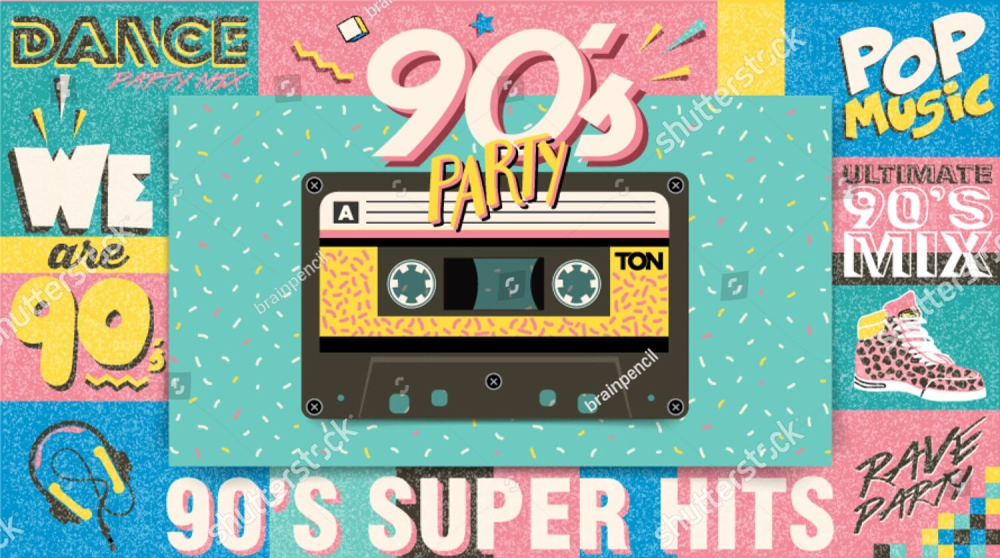

Musica Años 90'

Una vez superas la angustia que supone darte cuenta de que los noventa pasaron hace treinta (¡30!) años y que si no oldies, las canciones de aquella época ya tienen la categoría de throwback, te vas a dar cuenta de la enorme variedad musical de aquella década. Los 90 tuvieron de todo: arrancaron con mucho hip-hop y R&B, después llegó la explosión del grunge y terminaron cuando las boybands y los grupos de chicas estaban empezando a calentar para salir al campo a darlo todo.